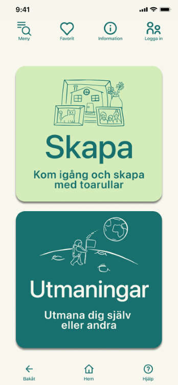

Lilla Gröna
Ett hållbarhetsprojekt som resulterade i en applikations-prototyp. I detta grupparbete följde jag, och två klasskamrater "designthinking" processens olika steg.
Kravhantering
Insamlade och dokumenterade krav. Där en del bestod av grupparbete och en del var indviduell där jag vidareutvecklade kravspecifikationen för att möta tillgänglighetsdirektivet WCAG 2.1
Förbättringsarbeten
Förbättringsarbeten av olika webbsidor. Där har jag utgått från nielsens 10 heuristiska principer för att identiferiera problem i andvändbarheten. Samt WCAG's riktlinjer.